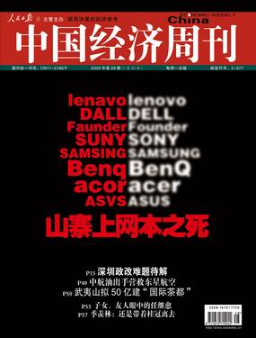
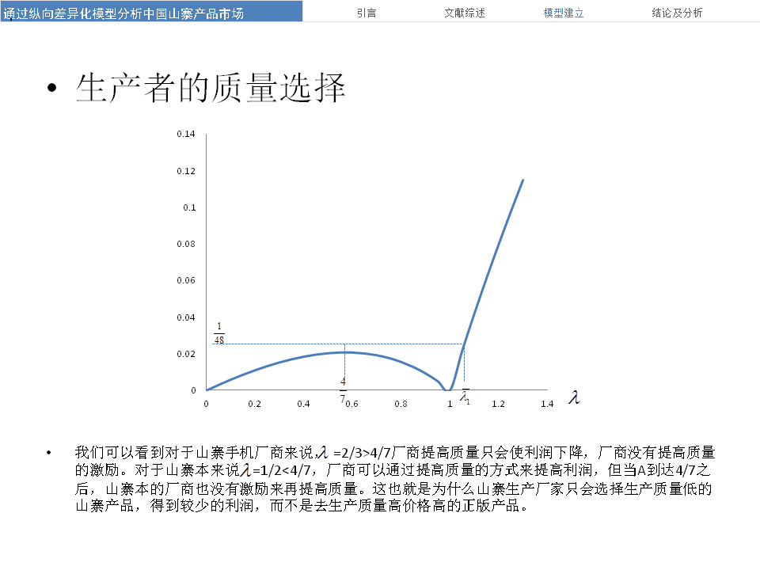

iPhone、三星、小米它们是如何定价的？为什么小米不能再多买200块钱一台？5C便宜一点是不是买的人更多？新的品牌应该如何定价？
诸如此类的问题困扰了我很久，直到现在我也没弄明白，他们背后应该都有专门做市场的咨询团队共同决定价格策略。不过我10年经济学毕业的论文选择了一个与质量、价格有关的话题，得出了一些有意思的结论，或许可以管窥一二。
###背景：
当时论文题目定的是《通过纵向差异化模型分析中国山寨产品市场——以山寨手机山寨上网本为例》。因为当时我们观察到一些现象：1、山寨市场规模大（百亿量级）；2、山寨市场中手机占比重大（约为3/4），和正版手机出货量比例约3:4；3、与此同时，山寨笔记本占市场笔记本出货量不到10%，市场占有率一直比较低。4、近几十年里外国直接投资（FDI）在发展中国家急剧增长。通常认为，FDI给发展中国家带来的不仅是资本转移、本地建厂，还会带来新的生产技术、管理理念等。外国直接能为我国带来很大的技术的进步么？山寨厂商会不会借着FDI的东风进行技术创新，山寨厂商的出路在哪里？

现在看来这些背景依然很有意思，最近出现了想小米、魅族、还可能有锤子等一大批国产的品牌手机，占领了不少市场份额。
先说一下当时的结论：
1、采用一个纵向差异化模型，通过对质量差异的假定及产品数据的收集，从质量价格比来入手分析不同山寨市场的规模问题。
2、得出的结论是，并非所有的山寨品都会有很好的市场，拥有高质量价格比的产品的市场要大，这可以解释山寨手机的火爆与山寨本的冷清。从生产者的角度来看，山寨厂商缺乏提高质量的激励。同时文章结合博弈论的相关知识，来分析FDI对本地企业的影响。得出的结论是，最终的均衡是与企业之间的技术差距和行动顺序都相关。山寨作为一个只能靠模仿的后发者，面临技术提升的后发劣势，后发者的利润并不会随着其技术水平的提升而增加。
当时的假设（不感兴趣的可略过这一段）：
1、假设有两组产品：山寨产品和正版产品，每组产品用两个变量来描述：价格P和质量S。对于山寨产品，其价格为P1，质量为S1；对于正版产品，其价格为P2，质量为S2。
S1 <= S2, P1 <= P2
2、把山寨产品和正版产品当作一组质量存在纵向差异的产品。
3、假设消费者效用函数为：
U = θ* S - P
其中，θ为消费者对产品质量的偏好，S和P分别为产品的质量和价格。θ按照某种密度f(θ)在经济中分布，在[0, +∞]中有累积分布函数F（θ），其中F（0）=0，F（+∞）=1。因此，f(θ)就是偏好参数小于的消费者的比例。我们对给定价格的情况下，质量越好，消费者对购买产品获得的效用越大。
4、质量的假设。（这个假设问题比较多）相近的一组产品，选择山寨仿某正版机型的产品作为我们的山寨产品。这样它们在功能上可以近似保持一致，然后我们以它们使用年限的期望作为质量变量S的度量。
假设正版产品的质保期为T1，质保期以后的使用年限为T2，又假设正版产品在非质保期内坏的概率是随机的且均匀分布。那么正版产品使用年限的期望（质量）是：
S2 = T1 + （T2）/ 2
对于山寨产品，厂家一般仅提供几周的质保，有的甚至不会提供质保，假设山寨产品最长使用年限也为，且山寨产品在这段时间内损坏的概率随机且均匀分布，那么由前面的分析山寨产品的质量可以量化为：
S1 = (T1 + T2）/ 2
5、时间假设。手机通常的更换频率是2年。在中国市场，通常手机的质保期是1年，也就是T1=1，质保期以后，手机还会再使用1年，也就是T2=1，笔记本通常的更换频率是4年。在中国市场，通常笔记本的质保期是2年，也就是T1=2，质保期以后，笔记本还会再使用2年，也就是T2=2。由于笔记本技术难度相对更高，因此山寨坏的概率更大，也就是说实际上山寨本的T是要小于4的，在这里我们假设其为3。（说明：通过问卷调查了50个数据求平均后取整得，正版上网本的更换频率4年，山寨本3年，也由类似方法得到。）
具体的数学运算可以直接看文后附的论文和PPT原文。我们可以直接看结论：

当时结论与现在的思考：
1、通过分析可以看出：并非所有的山寨品都会有很好的市场。质量价格比的差异是一个重要的原因。
2、从生产者的角度来看，山寨本生产商有激励提高质量获得更多的利润，而山寨手机生产商则没有此激励。如果生产商能将质量提高到比正版厂商还要好，则可获得更大的利润，但这对于中国中小企业来说几乎是不可能的。因为在中小企业提高技术水平的时候面临一个后发的劣势，虽然模仿的成本很低，但中小企业在提高质量的时候利润反而可能会减少，导致中小企业缺乏创新的激励。（现在看来，风险投资的存在和企业家之前的原始积累都可能成为突破这一瓶颈的武器。比如，小米用的是风投+雷军资金人才的原始积累，魅族和步步高用的是企业之前做MP3等产品完成的资金+产业链积累）
3、引入FDI是为了改善当地企业的技术水平，所以FDI生产技术要高于当地企业，但在这种情况下，却会导致当地企业缺乏技术升级的激励。通过博弈的相关分析，发现行动顺序在两个企业产品质量相差不大的时候有重要影响。
4、可能的一个政策建议是对能生产与国外相近质量的产品的企业给予一定的政策保护，使其成为先行者。